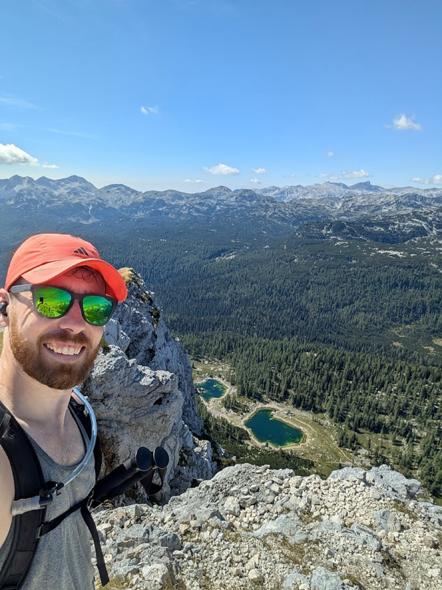

A week and a half through the Julian Alps and the Karst, starting in Ljubljana and working out to Lake Bled, the cave systems near the Italian border, and finishing on the coast at Piran.
Prepared with a short Slovenian phrasebook put together beforehand — enough for directions, menus, and basic pleasantries along the way.
Write whatever you want here — as many sentences or paragraphs as you like. Each block of text just needs to sit inside its own <p>...</p> tags.

Quick selfie of the view from the peak, 2000m up
And you can keep going with more paragraphs after the photo too.
Full album, all photos, best viewed in the Google Photos app.
View full album